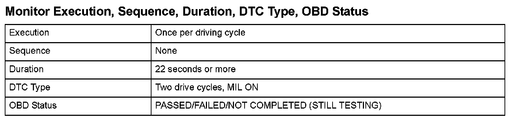

Advanced Diagnostics
DTC P2279: Intake Air System LeakGeneral Description
The positive crankcase ventilation (PCV) system reduces hydrocarbons (HC). The PCV system recirculates unburned air/fuel mixture (blow-by vapor) into the intake manifold so that it is drawn into the engine and burned, thus reducing HC. If the PCV hose comes off while air is supplied mainly via the idle control system with the throttle closed, the amount of air supplied to the engine is considerably more than the amount of air the idle control system supplies.
The powertrain control module (PCM) estimates the amount of air supplied to the engine while the throttle valve is fully closed, and if the estimated amount is more than the upper limit, it detects a malfunction and a DTC is stored.

Monitor Execution, Sequence, Duration, DTC Type, OBD Status
Enable Conditions
Malfunction Threshold
Either of these conditions is met.
- The estimated volume of intake air is 310 l/min (327.6 US qt/min, 272.8 Imp qt/min) or more when the MAP value is 35 kPa (10.3 in.Hg, 260 mmHg).
- The estimated volume of intake air is 302 l/min (319.2 US qt/min, 265.8 Imp qt/min) or more when the MAP value is 62 kPa (18.2 in.Hg, 460 mmHg).
Driving Pattern
1. Start the engine. Hold the engine speed at 3,000 rpm without load (in Park or neutral) until the radiator fan comes on.
2. Let the engine idle for at least 22 seconds.
Diagnosis Details
Conditions for illuminating the MIL
When a malfunction is detected during the first drive cycle, a Temporary DTC is stored in the PCM memory. If the malfunction recurs during the next (second) drive cycle, the MIL comes on and the DTC and the freeze frame data are stored.
Conditions for clearing the MIL
The MIL will be cleared if the malfunction does not recur during three consecutive trips in which the diagnostic runs.
The MIL, the DTC, the Temporary DTC, and the freeze frame data can be cleared by using the scan tool Clear command or by disconnecting the battery.